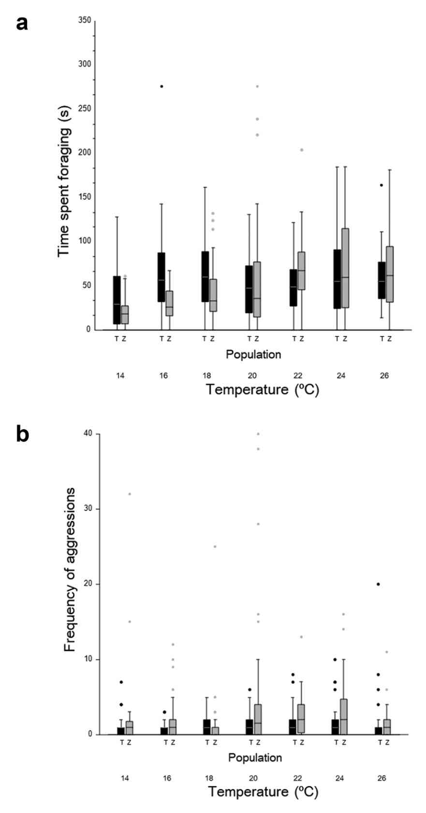

Mapa interactivo que muestra la localización de los lagos de Zempoala y Tonatiahua. En estos lagos se encuentran los organismos que estudiamos..
La invasión ya estaba aquí cuando nací
Ecología
Invasión de especies
Comportamiento
Ciencia de datos
Cambio climático
El cambio climático y las especies invasoras son una de las principales amenzas a la vida silvestre. Ante ellas, ¿Las especies nativas pueden ajustar su comportamiento?.
Este proyectó buscó entender si las especies nativas pueden ajustar sus comportamientos al estar expuestos a la invasión de sus hábitats por otras especies en un contexto de calentamiento global.
El mexcalpique (Fig. 1) es un pez endémico de la cuenca del río Lerma cuyo habitat está siendo invadido por el Guatopote manchando (Fig. 2). En los lagos de Zempoala hay mexcalpique pero no todos los lagos tienen Guatopote manchando. Esto es así desde 28 años antes de que hicieramos este estudio. Es por eso que este sistema fue ideal para evaluar si ha habido ajustes comportamentales en peces nativos expuestos a una especie invasora en un contexto de calentamiento global. También para evaluar si estos ajustos, con el propóstio de minimizar conflictos con los invasores, son hereditarios u ontogenéticos (por experiencia de individual).


Para el proyecto se criaron peces mexcalpique a partir de madres de dos lagos: uno invadido y otro no. Es decir, de ambas poblaciones se obtuvieron huevos que nacieron en condiciones de laboratorio. Luego evaluamos el consumo de alimento e interacciones de las crías en presencia de competencia alimentaria con peces invasores (Guatopote manchando) y con individuos de su misma especie, combinando machos y hembras, y distintas temperaturas. La evaluación de su comportamiento se se llevó a cabo con modelos lineales generalizados.
Lo que encontramos fue que existen diferencias en el comportamiento de las crías según el lago del que provienen. Los peces mexcalpique de Zempoala, el lago invadido, tenían un comportamiento más agresivo, probablemente debido a la competencia por el alimento con los invasores (Fig. 3). Por otro lado, los peces macho mexcalpique de Zempoala cambiaron su enfoque, pasando más tiempo interactuando con las hembras (Fig. 3). Estos cambios se debieron tanto a la adaptación local (herencia), luego de 28 años de convivencia entre especies, como también a ajustes en su comportamiento por experiencias de vida (ontogenia).

---
Este proyecto lo realicé como colaborador, en un proyecto coordinado por el laboratorio de Ecología de Especies Invasoras, del Instituto de Limnología, UNAM. Mi participación en el proyecto involucró el manejo, visualización y el análisis de datos, la interpretación de resultados y la redacción del reporte.
Sus resultados se publicaron en la revista Acta ethologica el 26 de junio de 2022 y lo puedes descargar aquí.
Cita: Palomera-Hernandez, V., Camacho-Cervantes, M., Ramirez-Carrillo, E., Pacheco-Muñoz, R., Macías Garcia, C., 2022. Coexistence with an invasive species in the context of global warming lead to behavioural changes via both hereditary and ontogenetic adjustments to minimise conflict. acta ethol. https://doi.org/10.1007/s10211-022-00402-4